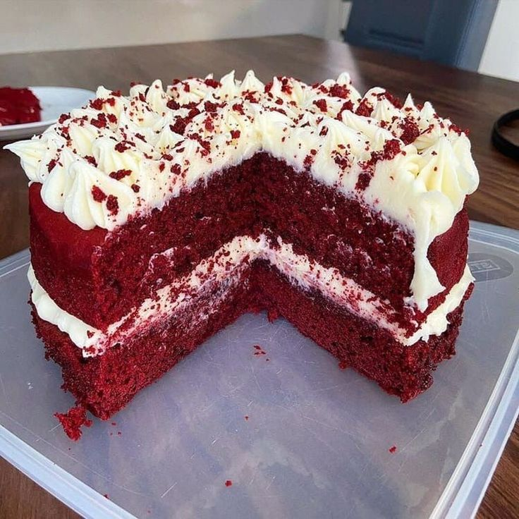

RED VELVET

1 ½ cups white sugar
½ cup shortening
2 eggs
4 tablespoons red food coloring
2 tablespoons cocoa
1 cup buttermilk
1 teaspoon salt
1 teaspoon vanilla extract
2 ½ cups sifted all-purpose flour
1 tablespoon distilled white vinegar
1 ½ teaspoons baking soda
Preheat the oven to 350 degrees F (175 degrees C). Grease two 9-inch round pans.
Mix all dry and wet ingredients in order.
Put in the preheated oven.
Start with the buttercream icing (Heat milk and flour in a saucepan over low heat, stirring constantly, until thick. Set aside to cool completely.)